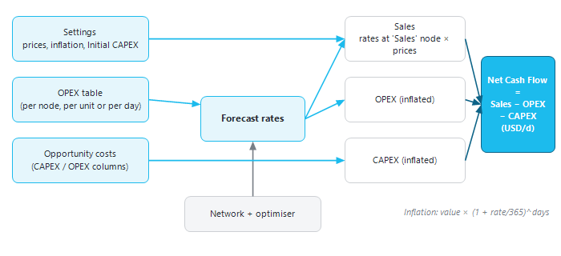
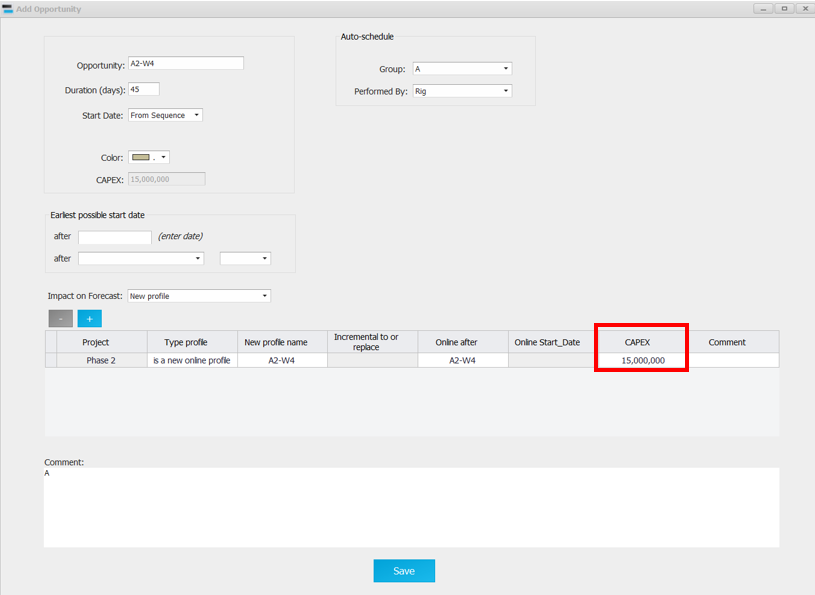
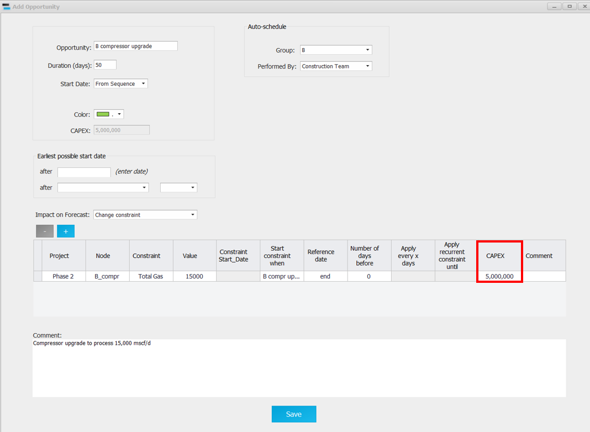
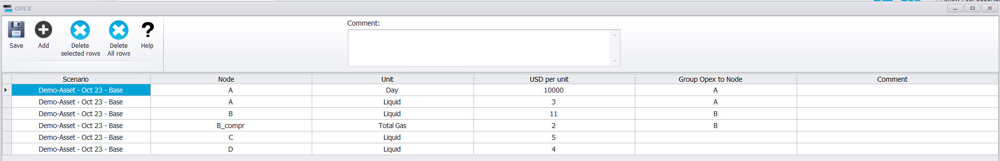
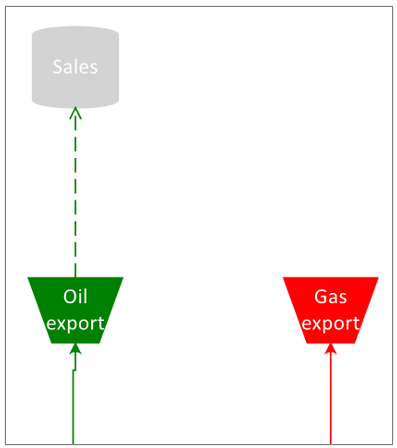
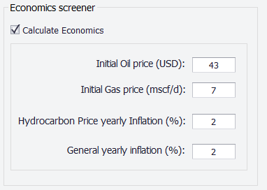
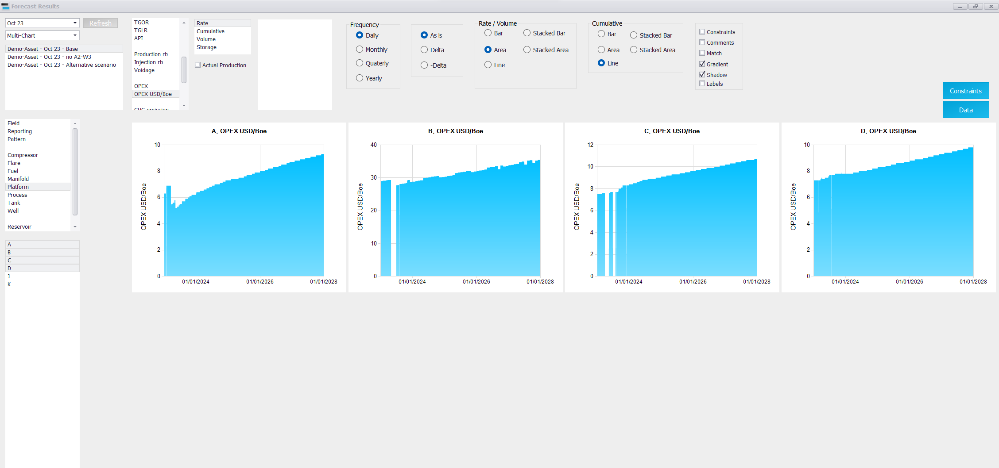

|
Economical screener
1. Overview
Precept is not an economics package, but it has a basic economical screener to compare scenarios and opportunities. At every time step of the forecast it calculates:
•the CAPEX and OPEX, inflated with the general inflation rate;
•the hydrocarbon sales, with prices inflated with the hydrocarbon price inflation rate;
•the Net Cash Flow = Sales − OPEX − CAPEX.
To use it, tick "Calculate Economics" in Settings and enter the prices and inflation rates there (section 5).

Where the economics inputs come from and how the Net Cash Flow is built.
2. CAPEX
CAPEX is a one-time cost, booked on the date the activity starts. It can be entered on any activity of an opportunity, in the "CAPEX" column of the tables "New profiles", "Shutdowns", "Constraints vs time", "Conversions" and "Rerouting" (see Opportunities):
•a new well or profile put online, or a well conversion;
•a change of constraints, for example a debottlenecking project or new facilities.
In the example below, a CAPEX of 15,000,000 USD is booked when the opportunity to drill the new well A2-W4 is executed.

In this other example, a CAPEX of 5,000,000 USD is booked when the opportunity "B compressor upgrade", which raises the compression capacity, is executed.

An "Initial CAPEX (USD):" can also be entered in Settings; it is booked on the first day of the forecast.
3. OPEX
OPEX can be entered in two places.
3.1 OPEX of the facilities: the "OPEX" table
1.Select the scenario.
2.Click "OPEX" in the "Expertise" group of the main ribbon.
3.Click "Add" for each cost, fill the row, then click "Save".
|
Column
|
Meaning
|
|
"Node"
|
The node (or well) the cost applies to.
|
|
"Unit"
|
"Day" for a fixed cost per day, or a rate ("Oil", "Water", "Gas", "Gas-lift", "Total Gas", "Liquid", "Water Injection", "Gas Injection") for a cost per unit of that rate at the node.
|
|
"USD per unit"
|
Cost in USD at the start of the forecast, per day or per unit of rate (per barrel or m³ of liquid, per mscf or m³ of gas, in the asset's units).
|
|
"Group Opex to Node"
|
Optional cost centre: the cost is also added to this group, so costs can be compared per location.
|
|
"Opex allocation factor"
|
Stored with the row; it is not applied in the current calculation.
|
|
"Comment"
|
Free text.
|
A cost per "Day" is booked only while something flows through the node (oil, gas, gas-lift, water injection or gas injection). A cost per unit of rate is the rate at the node multiplied by "USD per unit".
In the example below: 10,000 USD/d is booked while node A is running; 3 USD per barrel of liquid through node A; 11 USD per barrel of liquid through node B; 2 USD per mscf of total gas through node B_compr. The costs are grouped into four cost centres A, B, C and D, to compare the OPEX per location.

3.2 OPEX linked to an opportunity
The same five activity tables as for CAPEX have "OPEX", "OPEX unit" and "Group cost to Node" columns. "OPEX unit" is "One time cost" (booked once on the start date), "Day" (per day from the start date, while the node flows) or a rate (per unit of that rate at the node).
4. Sales
The revenue is calculated at a node that must be named "Sales" in the production network (see Network modelling). The oil and gas rates at that node are multiplied by the oil and gas prices. The sold volume is usually different from the produced volume, because some gas is flared or used as fuel, for example.
In the example below, the company does not sell its gas, so the "Sales" node is connected only to the "Oil export" node. The dotted line between "Oil export" and "Sales" shows a reporting connection, not a physical pipeline.

5. Prices and inflation (Settings)
All CAPEX and OPEX inputs are in USD at the start of the forecast. In Settings, box "Economics screener" > "Value at start of forecast":
|
Input
|
Meaning
|
|
"Initial Oil price (USD/bbl):"
|
Oil price at the start of the forecast.
|
|
"Initial Gas price (USD/mscf/d):"
|
Gas price at the start of the forecast (per mscf).
|
|
"Hydrocarbon Price yearly Inflation (%):"
|
Yearly escalation of the oil and gas prices.
|
|
"General yearly inflation (%):"
|
Yearly escalation of all CAPEX and OPEX.
|
|
"Initial CAPEX (USD):"
|
CAPEX booked on the first day of the forecast.
|
The rates are compounded daily from the start of the forecast: a cost entered as C is worth C × (1 + r / 365)^n after n days.

6. Results
After a forecast with "Calculate Economics" ticked, click "Charts" in the "Forecast Results" group of the main ribbon (see Forecast results: Charts):
•for the field: "OPEX", "CAPEX", "Sales", "Net Cash Flow" and "OPEX USD/Boe";
•for a node: "OPEX", "CAPEX" and "OPEX USD/Boe";
•type "Economics Reporting": the cost centres ("Group Opex to Node", "Group cost to Node").
Rates are in USD/d; cumulative curves are also available.
Example: field economical screener, stacked bar chart, monthly data
.png)
Example: OPEX (USD/boe), comparison of different platforms

7. OPEX & CAPEX Summary
"OPEX & CAPEX Summary" in the "Forecast" group of the main ribbon rebuilds the list of all CAPEX and OPEX items of the scenario (by opportunity, node, date, project and cost centre, with inflation), without running a forecast. The summary is saved in the Precept database for reporting outside Precept. Precept confirms "OPEX & CAPEX Summary succesfully updated !".
8. Using cash flow as the objective
In Settings, "Objective Function", the fluid "Net cash flow" makes the optimiser maximise the cash flow instead of a production rate. Selecting it ticks "Calculate Economics" automatically.
|